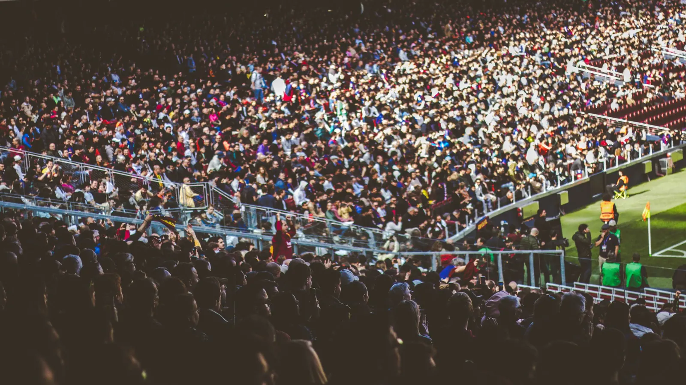

Football · Valemont League · Matchday 8
Brennholt 0–2 Ardenport: the leaders win the river derby
Two goals in eight second-half minutes and a penalty save with thirteen to play: Ardenport left Riverside Ground five points clear at the top of the Valemont League.
For fifty minutes the river derby was everything the fixture promises: loud, scrappy and short of clear chances. Brennholt pressed high and Ardenport, so fluent in their first seven league games, rarely found time on the ball in midfield.
The game turned on one move. A switch of play found the left-back in space, his low cross reached the near post before any defender, and the first-time finish gave the away end the moment it had waited for since kick-off.
"We were patient. In a derby you suffer first and play later, and tonight the players did both."
Eight minutes later the lead was doubled from a free kick that cleared the wall and dipped under the bar. Brennholt's best chance came from the penalty spot on 77 minutes, but the Ardenport keeper guessed right and kept the clean sheet.
The two sides meet again on matchday 9 at Harbour Park, live on Stadiora 1 on Saturday at 17:30.
Photo: a football crowd (Pexels), for illustration.
Key moments
- 12′
Chance
Ardenport's first shot of the night goes just wide of the far post.
- 38′
Yellow card
Brennholt's captain is booked for a late tackle on the halfway line.
- 54′
Goal
Ardenport lead: a low cross from the left, finished first time at the near post. 0–1.
- 62′
Goal
A free kick over the wall and under the bar doubles the lead. 0–2.
- 77′
Penalty saved
Brennholt win a penalty, and the Ardenport keeper dives right to save it.
- 90+4′
Full time
Five points clear at the top after eight wins in nine league games.